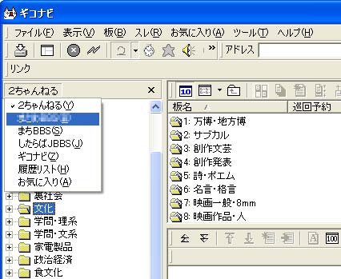
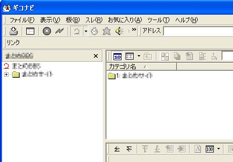

ギコナビでの設定方法 まず、このリンクのテキストファイルを右クリックして「対象をファイルに保存」メニューを選びダウンロードします。ファイル名を「BBS_TITLE.txt」などと適当に日本語に変更してからギコナビがインストールされているフォルダのconfig\Boadフォルダにコピーまたは移動させます。 作業が完了したらギコナビを起動します。既に起動中ならいったん終了してから再度起動させます。  左側に有る「２ちゃんねる」と書かれた文字の部分をクリックすると先程登録した掲示板一覧に切り替えられます。メニューバーの「表示」→「キャビネット」からの変更もできます。  レスの書き込みスレ立ては普通にできますが、自動で更新しないので書き込んだ内容を見るには板やスレッドを更新して下さい。 |